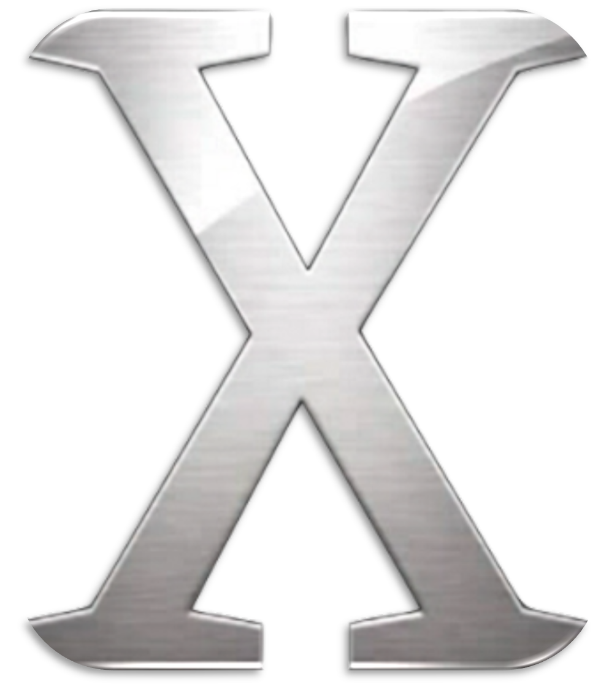

Introduction
macOS (/ˌmækoʊˈɛs/;] previously OS X and originally Mac OS X) is an operating system developed and marketed by Apple Inc. since 2001. It is the primary operating system for Apple's Mac computers. Within the market of desktop and laptop computers, it is the second most widely used desktop OS, after Microsoft Windows and ahead of Linux (including ChromeOS).
macOS succeeded the classic Mac OS, a Macintosh operating system from 1984 to 2001. During this time, Apple co-founder Steve Jobs had left Apple and started another company, NeXT, developing the NeXTSTEP platform that would later be acquired by Apple to form the basis of macOS.
The first desktop version, Mac OS X 10.0, was released on March 24, 2001. Mac OS X 10.5 Leopard, Mac OS X 10.6 Snow Leopard and all releases from OS X 10.8 Mountain Lion to macOS 14 Sonoma are UNIX 03 certified.[7][8] The derivatives of macOS are Apple's other operating systems: iOS, iPadOS, watchOS, tvOS, and audioOS.
A prominent part of macOS's original brand identity was the use of Roman numeral X, pronounced "ten", as well as code naming each release after species of big cats, or places within California.[9] Apple shortened the name to "OS X" in 2011 and then changed it to "macOS" in 2016 to align with the branding of Apple's other operating systems, iOS, watchOS, and tvOS.[10] After sixteen distinct versions of macOS 10, macOS Big Sur was presented as version 11 in 2020, and every subsequent version has also incremented the major version number
macOS has supported three major processor architectures, beginning with PowerPC-based Macs in 1999. In 2006, Apple transitioned to the Intel architecture with a line of Macs using Intel Core processors. In 2020, Apple began the Apple silicon transition, using self-designed, 64-bit ARM-based Apple M series processors on the latest Macintosh computers.[11] As of 2023, the most recent release of macOS is macOS 14 Sonoma.
OS History and Background
MacOS is an operating system created by Apple Inc., an American computer company known for manufacturing computers, smartphones, and consumer electronics that are very popular to this day. The OS was introduced way back in 1984 as an exclusive operating system of the company’s Macintosh line of personal computers. The Macintosh was the start of an era of graphical user interface (GUI) systems.
When promoting the Macintosh, Apple placed a strong emphasis on the user-friendly interface of its operating system. The Mac OS (originally called just System Software, with a version number appended) was graphical in nature, unlike almost all other modern PCs. Mac OS has never been granted a license to be used with computers manufactured by companies other than Apple, with the exception of a brief period in the 1990s.
In 1996, Apple acquired NeXT Computers, a competitor established by Steve Jobs following his departure from Apple. In 2001, the company introduced Mac OS X, a significant overhaul that incorporated elements from both the NextStep system and Apple's latest operating system. OS X utilized a UNIX kernel for its core software code, offering technical enhancements like memory protection and preemptive multitasking.
Source: https://www.britannica.com/technology/macOS
STEP INTO THE WORLD OF MAC OS X (EVOLUTION OF MAC OS)
The official name for Apple's operating system was Mac OS X from 2001 to 2011, covering version 10.7. In the subsequent four years, the naming convention transitioned to OS X. It wasn't until the launch of macOS High Sierra in 2016 that Apple adopted the current name "macOS," establishing a consistent naming system for their various operating systems, such as iOS, tvOS, iPadOS, and others.
Take a glimpse at the evolution of OS X since its introduction in 2001 up to the latest macOS version released in 2023.
Mac OS X 10.0 “Cheetah”
- Release Date: March 24, 2001
- This marked the initial significant launch in the OS X series.
- It brought forth the innovative "Aqua User Interface" and premiered early versions of applications like TextEdit, Preview, Mail, and QuickTime.
- Graphics improvements resulted in sluggish performance, leading Apple to prioritize performance over visual appeal in the subsequent release.
Mac OS X 10.1 “Puma”
- Release Date: September 25, 2001
- The Puma version prioritized enhancing system performance
- It also introduced functional improvements like streamlined CD and DVD burning, enhanced features in Finder, and broader printer support.
Mac OS X 10.2 “Jaguar”
- Release Date: August 23, 2002
- Incorporated a search function into Finder.
- It also introduced new applications such as iChat (which later became Apple’s default instant messaging app with built-in compatibility with AOL Instant Messenger) and Address Book.
- This release also introduced Universal Access, which enhanced OS X's usability for individuals with visual or hearing impairments or physical disabilities.
Mac OS X 10.3 “Panther”
- 
- Release Date: October 24, 2003
- Introduced Safari, Apple’s first web browser that replaced Internet Explorer on Mac.
- Also introduced Exposé, which aimed at enhancing the user experience when working with multiple open applications.
Mac OS X 10.4 “Tiger”
- Release Date: April 29, 2005
- This release showcased a universal search client named "Spotlight," allowing users to search the entire system for files, apps, and more.
- It was also the initial version to introduce Widgets on the new Dashboard.
- Apple also transitioned to using Intel’s processors, making Tiger the first system to operate on Macs with Intel chips.
Mac OS X 10.5 “Leopard”
- Release Date: October 26, 2007
- Considered to be the “largest update of OS X”
- Mac’s desktop changes significantly, with an updated Finder and Dock, a new menu bar, and Stacks.
- Introduced a built-in backup system called “Time Machine”, for restoring deleted files
Mac OS X 10.6 “Snow Leopard”

- Release Date: August 28, 2009
- This version focused on expanding 64-bit architecture, where most of the native applications were rewritten in 64-bit.
- The Mac App Store was born in this era.
Mac OS X 10.7 “Lion”
- Release Date: July 20, 2011
- Apple introduced several useful enhancements from iOS to Mac OS, including Launchpad and multi-touch gestures.
- The latest addition to Apple's infrastructure, iCloud, also made its debut in this version.
OS X 10.8 “Mountain Lion”

- Release Date: July 25, 2012
- Key apps like Notes, Reminders, and Messages migrated from iOS, transforming Mac into a more user-friendly hub for daily tasks
- The Notification Center was introduced, featuring on-screen banners to convey updates.
OS X 10.9 “Mavericks”
- Release Date: October 22, 2013
- Introduced iCloud Keychain which includes privacy features focused on password encryption and storage.
OS X 10.10 “Yosemite”
- Release Date: October 16, 2014
- The biggest design changed happened in this version which includes thin fonts, new color schemes and flat graphic design, which better matches the design of iOS.
- Also introduced “Handoff”, where users are able to move seamlessly between devices, and “Continuity”.
OS X 10.11 “El Capitan”

- Release Date: September 30, 2015
- This release emphasized performance and stability enhancements.
- It introduced "Split Views" for the convenient arrangement of two application windows side-by-side.
macOS 10.12 “Sierra”
- Release Date: September 20, 2016
- Apple transitions its naming from “OS X” to "macOS".
- "Siri," initially introduced in iOS, is now integrated into macOS
- Apple Pay and Apple Watch were also introduced with this version.
macOS 10.13 “High Sierra”

- Release Date: September 25, 2017
- Introduces a new video standard called HEIC and implements a transition to Apple File System (APFS), an enhanced alternative to its predecessor file system HFS+.
macOS 10.14 “Mojave”
- Release Date: September 24, 2018
- Implemented a visual update by introducing Dark Mode for background and apps.
- Introduced Dynamic Desktop feature where the desktop background changes according to the time of the Mac's current location.
macOS 10.15 “Catalina”
- Release Date: October 7, 2019
- Marks the end of iTunes, dividing Apple's primary hub for media content into three specialized apps: Music, Podcasts, and Movies
macOS 11 “Big Sur”

- Release Date: November 19, 2020
- Marks the big step for improving the Operating system’s design perspective like making sidebars full-height, the toolbars taller, and selections with rounded corners
- Also updated the Safari and Messages apps
macOS 12 “Monterey”
- Release Date: October 25, 2021
- Focused on new features that help users connect with family, friends, and colleagues by adding Spatial Audio to FaceTime, and introducing SharePlay.
- Also introduces Universal Control, allowing users to move their cursor across multiple Mac or iOS devices.
macOS 13 “Ventura”
- Release Date: October 25, 2022
- This release introduced a significant interface redesign, featuring a function called "Stage Manager" that automatically organizes active windows into stacks placed on the left side of the screen.
macOS 14 “Sonoma”
- Release Date: September 26, 2023
- With the macOS latest version, users can add and interact with widgets on their desktop, treat websites as standalone apps, create multi-user profiles in the Safari browser, and more.
Sources:
https://www.git-tower.com/blog/history-of-macos/
https://setapp.com/how-to/full-list-of-all-macos-versions
https://www.computerworld.com/article/3692528/evolution-of-macos-and-mac-os-x.html
Features and Services
Like other types of Operating System, the macOS keeps it bright unique shine in the market, though there may be volatile changes due to updates within it, the software may have introduced new features or changes since then. As of the macOS Big Sur and earlier versions, it contains prominent key features including:
1. User Interface (UI)
- macOS is known for its elegant and user-friendly interface. The Dock provides a quick access to frequently used applications, and the Finder allows their users to easily navigate their files and folders.
2. Spotlight Search
- Spotlight is a powerful search tool exclusive for mac, that allows users to quickly find files, launch applications, perform calculations, and many more.
3. Siri
- Siri is one of the well-known assistants of many tech enthusiasts, Apple's voice-controlled virtual assistant, is an integrated part of the macOS. Users can use voice commands to perform tasks, get information, and control various aspects of their computer.
4. Continuity
- macOS offers Continuity features that allow seamless integration between Mac and other Apple devices. This includes Handoff (continuing tasks between devices), AirDrop (a kind of wireless file sharing), and Universal Clipboard (used to copy and paste across devices).
5. Time Machine
- Time Machine is a built-in backup solution for its users. It automatically backs up your entire system allowing restoration of numerous amounts of files or the entire system to a specific point in time.
6. Gatekeeper
- Gatekeeper is a type of security that features help in protecting your Mac from downloading and or installing malicious software to the system by allowing only apps from the App Store or identified developers to be installed.
7. FileVault
- FileVault provides a full-disk encryption to establish a more secure and safe storage of data on your Mac. It encrypts the entire drive, preventing unauthorized access in your sensitive files.
8. iCloud Integration
- macOS harmoniously integrates with the iCloud. iCloud allows users to sync whether it be their files, photos, and documents across multiple devices, iCloud does the job. It can also enable features like iCloud Drive, Photos, and Keychain which can be quickly distinguished in macOS.
9. Mission Control
- this provides a great bird's eye view of all open windows, desktops, and full-screen apps, making it easy to organize and navigate between multiple different tasks.
10. Notification Center
- The Notification Center collects notifications from various apps, making it really convenient for users to stay updated on any types of happenings like from emails, messages, calendar events, and more.
11. Security and Privacy Features
- macOS incorporates many kinds of security measures, including Gatekeeper, XProtect, and privacy settings that allow users to control application access to sensitive data.
12. App Store
- The Mac App Store provides a centralized core location for downloading and updating applications, ensuring a secure and streamlined process.
Taking into consideration that many like these are subject to changes. Some may improve and others may be taken, as many new macOS versions may introduce additional features, changes or enhancements in the future.
Distinction
Exclusive Software
A number of software programs are only or mostly available for macOS because of their compatibility or development focus. Popular ones are composed of:
- Apple created Final Cut Pro X, a professional video editing program.
- Apple also developed Logic Pro X, a digital audio workstation (DAW) for music production.
- Apple's first-ever music production program is called GarageBand.
- Keynote: Apple's presentation software, a substitute for Microsoft PowerPoint.
- Xcode is a macOS integrated development environment (IDE) that's used for developing software, especially for watchOS, tvOS, iOS, and macOS apps.
- Furthermore, for historical reasons, some apps are more popular or have better functionality on Apple's platform even though they are not exclusive to macOS.
Additionally, some apps—like Sketch for UI/UX design, Things for task management, and OmniFocus for productivity—are not only available on macOS; they are also more well-liked or have better functionality on Apple's platform for historical reasons or developer preferences.
Remember that even though these programs are frequently thought of as macOS-only or as being extremely tailored for the Mac, there are plenty of other platforms with comparable features.
Apple's operating system for Mac computers, macOS, is highly regarded for a number of reasons.
- User Experience: The intuitive and user-friendly interface of macOS is well-known. It is user-friendly and visually appealing, making it suitable for both inexperienced and seasoned users.
- Stability and dependability: People appreciate Macs' stability and dependability. When compared to certain other platforms, the operating system generally has fewer problems with crashes and errors.
- Integration with the Apple Ecosystem: The smooth integration of Apple products is well-known. With features like Handoff, Continuity, and iCloud synchronization, macOS combines well with other Apple devices such as iPhones, iPads, and Apple Watches.
- Security: When compared to other operating systems, macOS is thought to be comparatively secure. To shield users from viruses and other dangers, it has built-in features like Gatekeeper, XProtect, and frequent security updates.
- Optimization: Since Apple owns both the Mac's software and hardware, there can be greater coordination between the two. Better performance and efficiency are frequently the result of this optimization.
- Updates and Support: Over time, Apple adds new features, security patches, and enhancements to macOS versions through regular updates and support.
On the other hand, an operating system's experience can differ depending on individual needs, preferences, and use cases. Although many users think macOS is a high-quality operating system, others may prefer other versions depending on their needs and level of experience.
Resale Value
When compared to many other computers, Macs typically have a higher resale value. There are multiple explanations for this:
- Build Quality: Compared to some other brands, Macs are renowned for their superior build quality and robust hardware that can hold up better over time.
- Longevity: Compared to many Windows-based PCs, Macs frequently receive longer software support. As a result, older Macs can continue to run the newest software and receive updates, which may increase their resale value.
- Apple Brand: There is a great reputation for Apple products, including Macs. Because of the brand's reputation for high quality, design, and user experience, many customers are willing to pay more for Apple products.
- Demand for Resale: The secondary market has a significant demand for used Mac computers. Because they hold their value well and can still offer a dependable and high-end computing experience at a lower price point than buying new, some users prefer to buy used Macs.
- Performance Retention: Because of their well-integrated hardware and software, Macs frequently retain their performance over time, which can make them appealing in the secondary market.
However, a number of variables, including the particular model, its state, the specifications, and the demand in the market at the time of sale, can affect the resale value. However, in comparison to many other computers, Macs typically hold their value rather well.
Creative Team

Mark James C. Barreda
Leader

Jervy Jake O. Morales
Back-end Developer
Carl Ernest N. Sinogba
Front-end Developer

Ian Gabriel C. Villame
Member

Francis Gerald D. Caisip
Member

Laurence Lemuel G. Ayo
Member

Ella Mae A. Balderama
Member
Koichi Nagata
Member